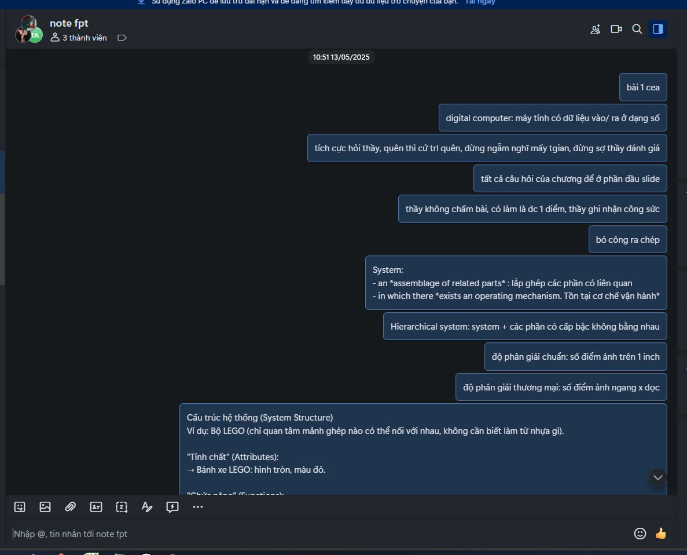
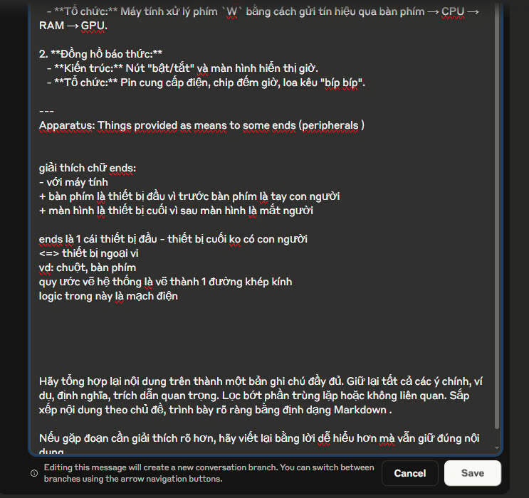
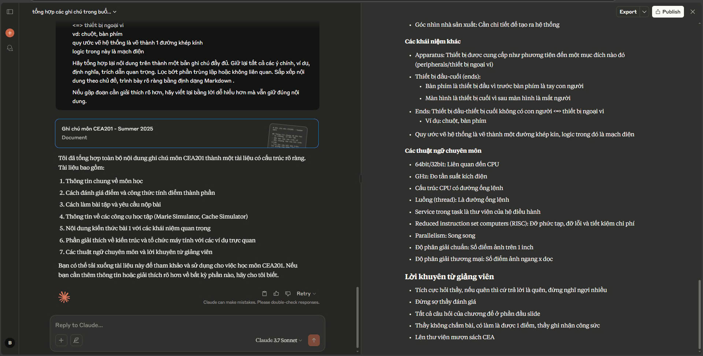
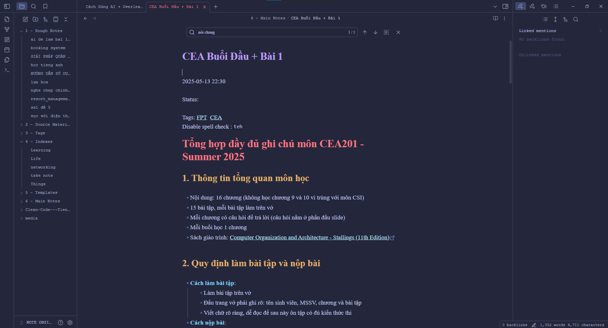
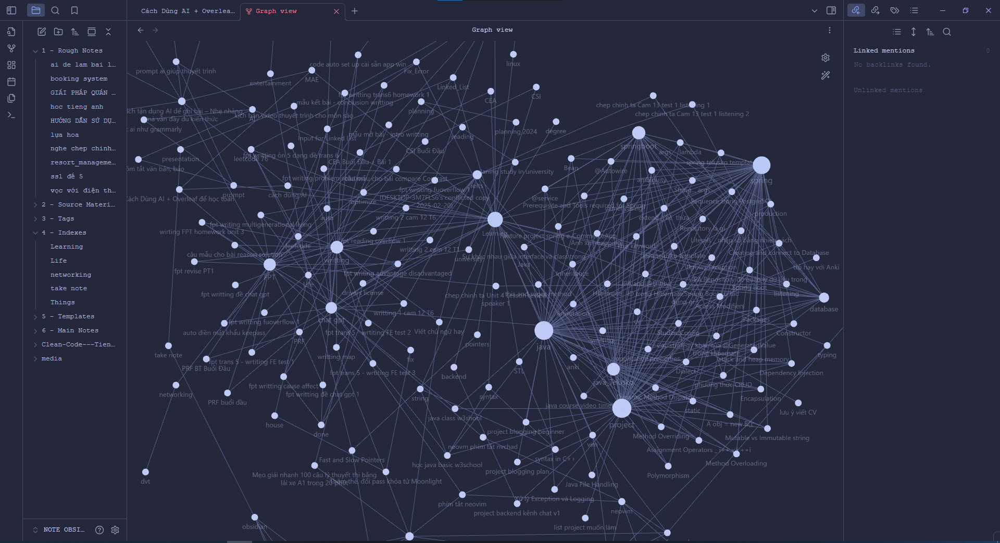
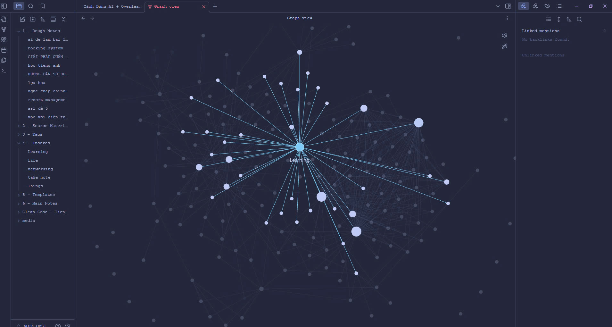

Cách tận dụng AI để ghi bài – Nhẹ nhàng mà vẫn đầy đủ kiến thức
Mở đầu – Ghi bài không cần viết tay, chỉ cần nhắn tin
Bạn có tin không? Giờ đây bạn không cần phải cắm cúi ghi chép từng chữ một trong giờ học nữa. Mình cùng nhóm học đã thử một phương pháp trông có vẻ 'lười biếng', nhưng thật ra lại rất hiệu quả: thay vì dùng bút, chúng mình dùng Zalo để chat, sau đó dùng AI để tổng hợp thành bài ghi hoàn chỉnh, rồi lưu vào Obsidian để tiện tra cứu.
1. Chat Zalo – Ghi chú nhanh, dễ dàng và cùng nhau bổ sung
Chúng mình tạo một nhóm chat Zalo riêng, đặt tên đơn giản như "Ghi nhanh cái note" hoặc "Cùng học thôi". Ai thấy đoạn nào quan trọng trong slide, bài giảng hay tài liệu thì cứ nhắn vào nhóm.
Ưu điểm
- Không cần để ý format hay tiêu đề, mục 1 nhỏ, mục I lớn,...
- Không cần phải nghĩ xem ghi chú mình định thêm nó nằm ở mục nào
- Có thể gửi hình ảnh, file PDF, link tài liệu…
- Mọi người trong nhóm cùng tương tác, bổ sung ý cho nhau
💡 Cách bọn mình hay dùng:
- Cứ ai thấy đoạn nào hay, quan trọng thì nhắn vào
- Có thể là một định nghĩa, một ví dụ hay, câu giảng của thầy cô, hoặc đoạn slide cần lưu lại.
- Nếu có trùng lặp cũng không sao, vì sau đó AI sẽ lọc giúp mình và tổng hợp lại cho gọn gàng.
- Khi giáo viên nói câu nào hay, bạn có thể quote lại rồi thêm icon ✅ để nhấn mạnh (nhớ lúc sau kêu AI tổng hợp thì giải thích cho nó vụ này)
👉 Lưu ý nhỏ:
- Nên hạn chế gửi ảnh lung tung, chỉ tập trung nhắn những nội dung liên quan đến bài học để tránh lan man.
- Không cần nhắn quá nhiều, chỉ cần đủ để AI hiểu được nội dung chính là được. (AI xử lý text tốt hơn ảnh)
2. AI – Trợ lý học tập siêu nhanh và gọn nhẹ
Sau mỗi buổi học, mình copy toàn bộ nội dung chat trên Zalo và dán vào AI (thường là ChatGPT, Gemini hoặc Claude) kèm prompt tham khảo như sau:
<Đống chat lộn xộn>
Hãy tổng hợp lại nội dung trên thành một bản ghi chú đầy đủ. Giữ lại tất cả các ý chính, ví dụ, định nghĩa, trích dẫn quan trọng. Lọc bớt phần trùng lặp hoặc không liên quan. Sắp xếp nội dung theo chủ đề, trình bày rõ ràng bằng định dạng Markdown .
Nếu gặp đoạn cần giải thích rõ hơn, hãy viết lại bằng lời dễ hiểu hơn mà vẫn giữ đúng nội dung.Dưới đây là một ví dụ về kết quả AI trả về:
⚙️ Một vài mẹo để AI làm việc tốt hơn:
- Xóa phần chào hỏi, chat ngoài lề trước khi gửi vào
- Bạn có thể nhắn thêm yêu cầu để kết quả phù hợp hơn, ví dụ: "dịch sang tiếng Việt cho dễ hiểu", "giải thích thuật ngữ bằng ví dụ", "viết lại đoạn code kèm mô tả"
📌 AI có thể giúp bạn:
- Tóm tắt nội dung dài thành ý chính
- Phân loại kiến thức theo chủ đề
- Viết lại đoạn code mẫu đúng cú pháp (có thể kèm theo cả comment chi tiết, testcase, debug từng bước, v.v)
- Giải thích thuật ngữ hoặc khái niệm phức tạp
💭 Và quan trọng nhất: bạn chỉ cần chỉnh sửa nhẹ rồi lưu vào hệ thống của mình là xong. Không mất hàng giờ để viết lại bài nữa!
3. Obsidian – Lưu trữ và tổ chức kiến thức cực chất
Sau khi có nội dung đã được AI xử lý, mình đưa hết vào Obsidian – một ứng dụng ghi chú mạnh mẽ, hỗ trợ Markdown và cho phép liên kết các note lại với nhau như một mạng lưới tri thức cá nhân (còn gọi là Zettelkasten hoặc Second Brain).
Obsidian giúp mình:
- Lưu trữ bài ghi một cách khoa học
- Tổ chức theo chủ đề dễ tìm kiếm
- Liên kết các kiến thức với nhau để dễ nhớ hơn
Một ví dụ về Graph View trong Obsidian, thể hiện sự liên kết giữa các ghi chú:
 👉 Và nếu bạn đang nghĩ "Ủa, nghe hay đấy nhưng xài có rối không?" thì mình cực kỳ khuyến khích bạn xem video này: link này.
Video chia sẻ một hệ thống cực đơn giản nhưng hiệu quả để biến Obsidian thành mạng tri thức cá nhân – phục vụ việc học, ghi chú, và thậm chí là viết blog, làm nghiên cứu.
Một vài điểm đáng giá từ video:
- Đừng cố tạo hệ thống hoàn hảo ngay từ đầu, vì càng phức tạp bạn sẽ càng dễ bỏ cuộc.
- Ghi chú bằng chính lời văn của mình giúp hiểu bài sâu hơn (giống phương pháp Feynman).
- Mỗi ghi chú là một "ý tưởng độc lập", và bạn có thể kết nối chéo chúng như mạng nhện.
- Khi cần viết bài, bạn chỉ việc lấy các ghi chú đó, sắp xếp lại là xong – không cần mò mẫm lại từ đầu.
Nói cách khác: bạn đầu tư càng nhiều ghi chú, bạn càng rút ngắn thời gian học và viết về sau.
Chi tiết hơn thì chắc phải dành cho một bài viết khác ( nếu ae ủng hộ😉)
4. Học hiệu quả mà không cảm thấy mệt mỏi
Phương pháp này phù hợp với nhiều người, không nhất thiết phải là dân IT. Bạn chỉ cần:
- Một nhóm học có tinh thần hợp tác (1 mình cũng được)
- Một ít thời gian để tổng hợp nội dung với AI
- Một nơi lưu trữ thông minh như Obsidian
Và thế là bạn đã có một hệ thống ghi bài hiện đại, hiệu quả mà lại vô cùng nhẹ nhàng!
Kết luận – Ghi bài thông minh nhờ AI
Giờ đây, việc ghi bài không còn là nỗi ám ảnh nữa. Chỉ cần một chút sáng tạo và biết tận dụng công cụ, bạn hoàn toàn có thể biến việc nhắn tin thành kiến thức rõ ràng, có hệ thống.
Chat Zalo + AI tổng hợp + Obsidian lưu trữ = Hệ thống ghi bài thông minh dành cho mọi người!
Mình chỉ chia sẻ cách mà nhóm mình đang áp dụng – nếu bạn thấy phù hợp, có thể thử trong buổi học tới. Biết đâu bạn cũng thấy việc ghi bài nhẹ nhàng và thú vị hơn một chút 😊
Bài viết chắc chắn vẫn còn nhiều thiếu sót, nên nếu anh em có ý tưởng hay góp ý gì để bài hoàn thiện hơn, cứ chia sẻ thoải mái nha.
Cảm ơn mọi người nhiều! 🙏